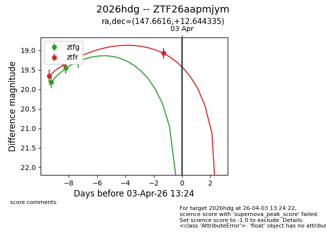
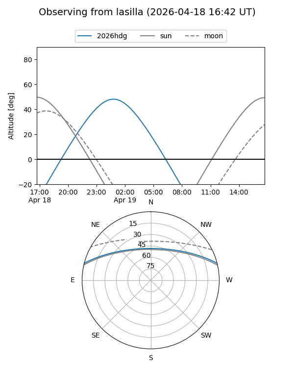
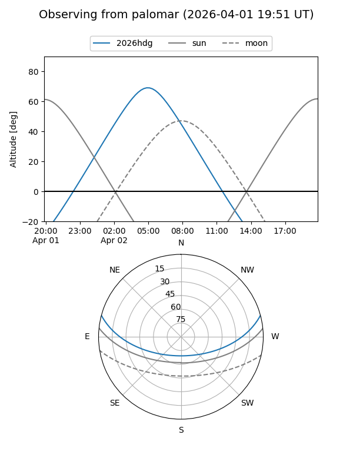
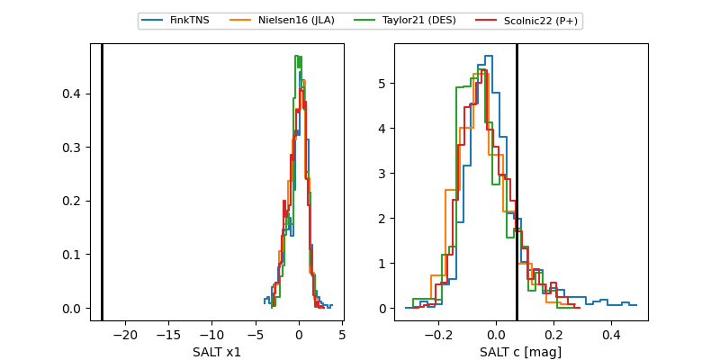

2026hdg
Target 2026hdg at 2026-04-03 13:27
Aliases and brokers:
FINK: link
Lasair: link
ALeRCE: link
TNS: link
YSE: link
alt names
ZTF26aapmjym (ztf,fink_ztf)
2026hdg (tns,yse)
Coordinates:
equatorial (ra, dec) = 147.6616,+12.64434
equatorial (HMS+DMS) = 09:50:38.79,+12:38:39.61
galactic (l, b) = (222.6610,+45.37701)
Flags:
Photometry:
last ztfg=19.30, ztfr=19.07
3 ztfg, 4 ztfr detections
Lightcurve

Visibility


Additional plots
